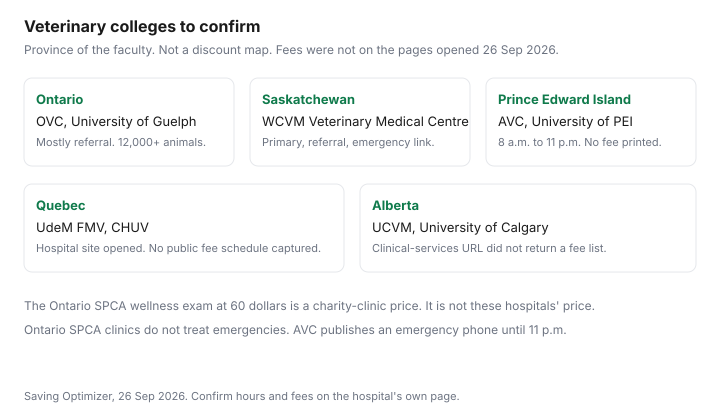

Pets · Canada
Low-Cost Vet Care in Canada: SPCA Clinics, Humane Societies, Vet Schools and Assistance Funds
Low-cost care in Canada is a set of organisations with their own rules, not a single national program. This page is a directory of pages that opened on 26 Sep 2026: what each one says it does, who it says can book, and what it refuses. It is not a promise you will be seen this week. Call the clinic. Education only. This is not veterinary advice.
Key takeaways
- Ontario SPCA, 2026 fee table: wellness exam $60, rabies and several other vaccines $33 each, microchip $36. Five clinics. Cats and dogs. No emergency care.
- Priority booking goes to people on a subsidy, without a regular veterinarian, or with Indigenous status. Proof is required for subsidised services. The public can still ask to book.
- Teaching hospitals at Guelph, the University of Saskatchewan, the University of Prince Edward Island, and the Université de Montréal were opened. None of those pages printed a discounted fee schedule.
- The Farley Foundation subsidises care for low-income Ontario families through clinics. No income number was on the page. The University of Calgary clinical-services URL did not return a fee list.
- If the animal is in crisis, use the emergency-bill guide. These clinics say they are not that door.
Ontario SPCA clinics and subsidy requests
The Ontario SPCA and Humane Society veterinary page, opened 26 Sep 2026, says it operates five clinics and lists them with phones. Greater Sudbury, at College Boreal, 21 Lasalle Boulevard, 705-995-4463. York Region, 16586 Woodbine Avenue, Stouffville, 905-898-6112. Marion Vernon Memorial, 91A Patterson Road, Barrie, 705-734-9882. Durham Region, 1505 Wentworth Street, Whitby, 905-285-6896. Northwest, 1535 Rosslyn Road, Thunder Bay, 807-235-9279. Services described on that page are spay and neuter, wellness exams, vaccinations, parasite prevention, diagnostic testing, dental care at the York Region clinic, and end-of-life care. The page says the clinics do not have the capacity to provide emergency care or treat injured or sick animals.
The 2026 fee table on the same page includes a wellness exam at $60, rabies, FVRCP, FeLV, DA2PP, leptospirosis, and Bordetella at $33 each, a microchip at $36, a 4DX test at $80, a FeLV/FIV test at $90, euthanasia at $250, and a pre-op exam at $25. Bloodwork “costs vary.” Surgery fees are on the spay and neuter guide. A deposit is required to book. Basic veterinary care is described as open to the general public and to people who receive a government subsidy, have an Indigenous status card, are referred through social services, or do not currently have a relationship with a local veterinarian. Anyone is eligible, and priority for appointments goes to people on a subsidy, without a regular veterinarian, or with Indigenous status. Proof of eligibility is required for subsidised services.
The financial-assistance form at ontariospca.ca/subsidy-request-form/ is how you ask for information. The page says the charity will contact you. Spay bookings that need help are pointed to the spay registration with a financial-assistance checkbox. The form does not print a grant amount. Fill in the form. Do not assume a same-day yes.
Humane society community clinics
A community clinic is a local humane society or SPCA program, and the fee is whatever that organisation prints. This build did not open a Niagara, Edmonton, or other local humane-society fee page that could be quoted beside the Ontario SPCA table. Those rows stay blank. If your city has a community clinic, use its own site for the price, the species it sees, and whether income proof is required.
What the Ontario SPCA page does say about scope is a useful test for any clinic that calls itself low-cost. Cats and dogs. Exams, vaccines, microchips. Referral out if the animal needs more. No treatment of illness or injury at those five sites. A clinic that offers more than that is a different service. Read its page. The BC SPCA community spay program is a voucher path, not a walk-in hospital. It is described on the spay guide because that is the service the page actually offers.
Veterinary college teaching hospitals (OVC, WCVM, AVC, UdeM)
A teaching hospital trains students and treats patients. It is not automatically a discount clinic. The Ontario Veterinary College site at the University of Guelph links to the OVC Health Sciences Centre. The companion-animal hospital page says more than 12,000 animals are seen annually, the majority referred by veterinarians for procedures not readily available in general practice. Your pet may be seen with final-year students and specialists. The page does not print a public fee schedule or a low-income rate. Ask the hospital, and ask your veterinarian whether a referral is the path.
The Western College of Veterinary Medicine’s Veterinary Medical Centre, on the University of Saskatchewan site, describes primary and specialised care, clinical and referral services, hospital hours on a linked contact page, and a 24/7 emergency link. A fees-and-payment page is linked. This draft did not open a numbered fee schedule there, so no Saskatchewan price is printed. The Atlantic Veterinary College Veterinary Teaching Hospital at the University of Prince Edward Island says the hospital operates 8 a.m. to 11 p.m. every day, with community practice and specialty appointments Monday to Friday, 9 a.m. to 5 p.m., based on availability. Small-animal appointments: 902-566-0950. Small-animal emergencies can call in that same 8 a.m. to 11 p.m. window. No fee was on the page.
The Université de Montréal faculty hospital site, chuv.umontreal.ca, opened as a services menu with referrals and a pharmacy. It did not print a public fee schedule on the page captured 26 Sep 2026. The University of Calgary Faculty of Veterinary Medicine clinical-services URL did not return a service list or a fee. UCVM is on the map below so you know the faculty exists to confirm. It is not described here as a discounted clinic.
Assistance charities
The Farley Foundation homepage says pet owners should not have to choose between basic needs and a pet’s health, and that the foundation subsidises veterinary care for low-income Ontario families. It says it works with vet clinics across Ontario. A client note on the page describes help with an ultrasound cost. The for-pet-owners URL and the homepage did not print an income threshold, a covered-procedure list, or a maximum subsidy. The practical step is to ask your veterinarian whether the clinic works with Farley, then follow the foundation’s instructions. A story on a homepage is not an approval.
Income-tested help for other bills is a different program. The LEAP guide is Ontario emergency help for utility bills. The low-cost internet guide is a telecom benefit. Neither pays a veterinarian. They matter only because a household that qualifies for one income test should still read the pet fund’s own test. Do not reuse a utility letter as proof unless the pet fund says that letter counts.
What to expect: waits and eligibility
The Ontario SPCA says demand is high enough that a deposit is required to hold an appointment. Priority is not the same as a guaranteed week. Dental registration at York Region was closed on the page opened 26 Sep 2026, with a note to check back next month. Spay patients must meet the clinic’s medical criteria. Dogs in heat are not spayed there. Animals intended for sale, and breeders, are not eligible for the spay service. If you are turned away on the day because fasting instructions were missed or the animal does not meet medical criteria, a cancellation fee can apply. Read the pre-surgery note before you travel.
Teaching hospitals add a different wait: referral review, student schedules, and emergency triage. The OVC page’s “majority referred” line means a self-referred wellness visit may not be the service they are staffed to do. Ask. Bring records. Expect that “teaching hospital” can mean a longer visit because students are part of the team, which the OVC page states openly. It does not mean the invoice will match the Ontario SPCA’s $60 exam.
Provincial directory approach
Build a one-page directory for your own city instead of trusting a national list. Four columns are enough: organisation, what the page says it offers, who qualifies, how to book, and the URL with the date you opened it. If a cell is empty, leave it empty. A blank is more honest than a fee copied from another province.
| Option | Who qualifies | Services the page names | How to book | Source opened |
|---|---|---|---|---|
| SPCA clinic | Ontario SPCA: public, with priority for subsidy, no regular vet, or Indigenous status. Proof for subsidised care. | Exams, vaccines, parasite prevention, diagnostics, spay and neuter, dental at York Region, end of life. Not emergencies. | Phone the clinic. Deposit to hold the time. Financial-assistance form if you need a subsidy conversation. | ontariospca.ca/veterinary-services/ |
| Humane society community clinic | Not verified outside the Ontario SPCA system in this draft. | Use the local society’s page. | The local page. | No second society fee page opened. |
| Veterinary college teaching hospital | OVC: mostly referral. WCVM: owners and referring veterinarians. AVC: appointments and a published emergency window. No income test printed. | Specialty and primary care as each site describes. Fees not printed on the pages opened. | OVC via the Health Sciences Centre. WCVM client desk and referral form. AVC 902-566-0950. CHUV referral menu. | ovchsc.ca, vmc.usask.ca, upei.ca/avc, chuv.umontreal.ca |
| Charity fund | Farley: low-income Ontario families. Cutoff dollars not printed. Ontario SPCA form: request, not an approval. | Farley: subsidies through participating clinics. Procedures not listed as a menu. | Ask the clinic, then the foundation. SPCA form online. | farleyfoundation.org and the Ontario SPCA subsidy form |
| Mobile clinic | The York Region Neuter Scooter page was a 17 Jun 2026 cat event for people on subsidised income. It is a past date. | Cat spay $152 and cat neuter $123, tax included, plus $20 cash transport, on that event page. | Do not book that date. Watch the Ontario SPCA events list for a new one. | Ontario SPCA Neuter Scooter event page, opened 26 Sep 2026 |

Keep the cash path anyway. A subsidised exam can still leave you with bloodwork, and a teaching hospital can still be a full invoice. The parking guide is where that cash should sit so a “low-cost” booking does not become a credit-card balance when the estimate grows.
Sources & date stamps
- Ontario SPCA veterinary services and subsidy-request form, including the 2026 fee table, five clinic addresses, eligibility, and the no-emergency statement. Opened 26 Sep 2026.
- OVC Health Sciences Centre companion-animal hospital: more than 12,000 animals a year, majority referred. No fee schedule. Opened 26 Sep 2026.
- WCVM Veterinary Medical Centre, University of Saskatchewan: primary and specialised care, referrals, emergency link. No numbered fees captured. Opened 26 Sep 2026.
- Atlantic Veterinary College Veterinary Teaching Hospital, University of Prince Edward Island: hours and 902-566-0950. No fees. Opened 26 Sep 2026.
- CHUV, Université de Montréal faculty hospital site: services menu, no public fee schedule captured. University of Calgary Faculty of Veterinary Medicine clinical-services URL: no fee list returned. Opened 26 Sep 2026.
- Farley Foundation: low-income Ontario families, clinics across the province. No income cutoff printed. Opened 26 Sep 2026.
Frequently asked questions
Where can I find low-cost vet care in Ontario?
The Ontario SPCA lists five veterinary clinics: Greater Sudbury, York Region in Stouffville, Marion Vernon Memorial in Barrie, Durham Region in Whitby, and Northwest in Thunder Bay. Basic care is exams, vaccines, parasite prevention, and diagnostics. Dental care is listed at the York Region clinic. The same page says these clinics do not treat emergencies or sick and injured animals. Phone the clinic and use the fee table on ontariospca.ca before you travel.
Do SPCA clinics require proof of income?
The Ontario SPCA says anyone may access the clinics, with booking priority for people on a subsidy, people without a regular veterinarian, or people with Indigenous status. Subsidised services require proof of eligibility. The financial-assistance form is a request for information, not an instant approval. A public spay or vaccine at the posted 2026 fee is a different path from a subsidised fee. Ask which path you are on when you book.
Can I take my pet to a veterinary college?
You can ask. The Ontario Veterinary College’s companion-animal hospital says more than 12,000 animals are seen a year, most of them referred for care that is not readily available in general practice. The Western College’s Veterinary Medical Centre in Saskatchewan offers primary and specialised care and a referral route, plus a 24/7 emergency link. The Atlantic Veterinary College books appointments and takes small-animal emergency calls until 11 p.m. None of those pages printed a low-income discount.
Are there funds that help pay vet bills?
The Farley Foundation says it subsidises veterinary care for low-income Ontario families and works with clinics. No income dollar limit or grant cap was on the pages opened 26 Sep 2026. The Ontario SPCA financial-assistance form is the charity’s own request path. Other provinces’ funds were not opened. Confirm eligibility with the fund, not with a social-media list.
What services do low-cost clinics not offer?
The Ontario SPCA says its clinics do not have the capacity to treat ill or injured animals or emergencies, and that basic care is for cats and dogs. If an animal needs more than an exam, vaccines, or microchip, the family is referred to a local veterinarian. Dental packages exist at the York Region clinic and were closed to new registration on the page opened 26 Sep 2026. Breeders and animals intended for sale are not eligible for the spay service.